热身小练习
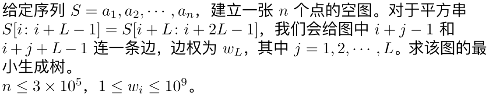
首先枚举$L$，根据平方串的套路，将序列每$L$个位置设置一个关键点，求出相邻两个关键点开始的最长公共前后缀，那么我们可以得到$n\log n$条形如$[l_1,r_1]$到$[l_2,r_2]$对应点有一条权值为$w_L$的边的信息。
此时有两种做法。第一种是考虑用Kruskal求最小生成树，首先将所有信息按照边权从小到大排序，此时我们只需要求出此次合并会合并多少个连通块。接着类似萌萌哒的做法，维护$\log n$个并查集，第$i$层的第$j$个点代表$[j, j+2^i-1]$这整个区间的点。每次合并的时候如果当前合并的两个点已经连起来了，那么就return，否则递归向下合并。可以发现每次递归到最后一层并查集时必然会合并两个原来没有连通的并查集，而一共只有$n\log n$个点，因此复杂度为$O(n\log^2 n)$。
第二种是温爷的做法，我们同样建出$\log$排点，但是此时我们并不用在线地求出此次连接了多少个连通块，而是将当前的边存入每一层中。也就是说，如果第$i$层第$a$个点与第$b$个点有连边，那么它等价于$[a,a+2^i-1]$到$[b,b+2^i-1]$的对应点均有连边。
对于每一层我们将这一层的所有边拿出来跑一遍最小生成树，只留下那些在最小生成树上的边，接着下放到下一层并查集。如果$a$与$b$的连边得以保留，那么我们会在下一层添加两条边：$a,b$与$a+2^{i-1},b+2^{i-1}$。合并到最后一层时就是答案。
LOJ 2092 「ZJOI2016」大森林
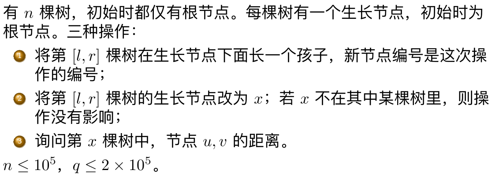
可以发现实际上第一种操作的$[l,r]$并没有什么用，我们完全可以将第二个操作的$[l,r]$与对应的一操作的区间求交，然后就可以将一操作当成每棵树的生长节点都会长一个叶子。接下来我们默认二操作的$l,r$是求交之后的$l,r$。
接着，由于生长是往原来的节点上挂节点，因此所有的询问都可以放到二操作之后。
将所有询问离线，将二操作的所有区间按照$r$从小到大排序，接着扫描线。
可以发现的是，如果一段连续的区间中都只有一操作，考虑这些操作加入的点，显然无论之前的二操作怎么改，在某一棵树中，这些节点的父亲一定是相同的。也就是说，对于某一棵树，它们是从同一个生长节点长出来的。
因此，我们可以将每一段连续的一操作加入的点看作一个单元，接着我们考虑这样一件事：一开始有一个二操作$[l,r]$，在这个二操作之前编号为$l$的树的生长节点为$x$，然后被改为了$y$。考虑$l$这棵树相对于$l-1$这棵树的变化：$l-1$没有受到这个二操作的影响，因此这个二操作之前的单元被挂在了$x$点下方。$l$受到了二操作的影响，因此这个单元的点被挂在了$y$点下方。因此，我们只需要将$x$点的这个单元$cut$掉，再$link$到$y$点下方即可。对于$r,r+1$这两棵树的变化类似，将这棵子树挂回去就行了。
BZOJ 2959 长跑
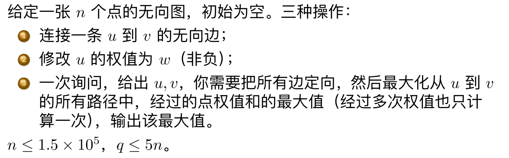
通过观察可以发现，对于一个边双连通分量，从它内部的任意点出发一定可以遍历内部的所有点，最终停在任意的终点（注意每个点可以被经过多次），原理是边双连通分量一定可以通过给边定向得到一个强连通分量。
因此我们只需要动态地将每个边双缩起来，这样会形成一个森林，缩起来之后的点为其代表的边双的所有点权之后，最后我们只需要查询路径和就好了。
关于缩点的实现方式，可以整一个并查集，维护每个点现在变成了啥，然后$lct$中只要涉及$fa$就丢进并查集查一下。
一道例题
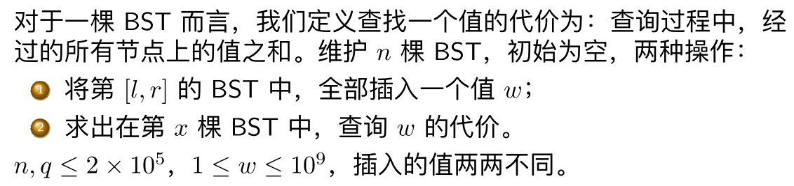
结论：$w$的祖先为，将当前BST中的所有点按照权值从小到大排序之后，从$w$开始向左向右关于插入时间的单调栈。
线段树维护单调栈。
LOJ 2472 「九省联考 2018」IIIDX
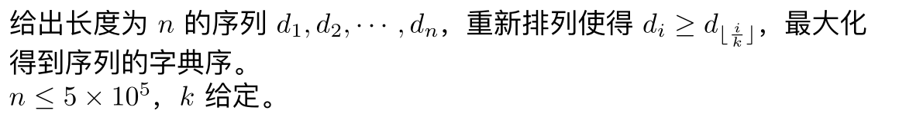
序列可以看作是一棵树，我们希望第一层中的所有点、第二层中的所有点……它们构成序列的字典序尽量大。
一种错误的贪心是将所有数从大到小排序之后给每个子树塞$sz$个，当存在相同的$d$时这样是错的。
将所有数去重之后从小到大排序（注意也要记录下出现次数），我们关心的是每个数以及它右边权值不小于它的所有数中，还没有被用的数有多少个。只要这个没有被用的数$f_i$不小于$sz_u$，我们就能让$u$的权值等于$i$，接着在不小于$i$的数中选$sz_u$个塞入子树中。
我们是一层一层考虑的，因此考虑到当前层的$u$时我们要帮它的子树中的点占好位置。如果我们确定了$u$最终的权值为$i$，那么线段树上$i$以及$i$左边所有比$i$小的数的$f$值都应当减去$sz_u$，表示它右边有$sz_u$个位置被占了，对于$i$右边的数则不需要修改它们的$f$。
需要保证的是如果当前点的权值要取$i$，那么$i$以及小于$i$的所有点的$f$都不能小于$sz_u$。否则代表那个点右边的数被用完了，显然不合法。这同时也意味着$u$的子树一定存在一种方案使得能放下那些比$i$大的还没有被占过的数。
另外，如果$u$的父亲$v$权值为$p$，我们应当在处理$v$的所有儿子时，给$1,\cdots, p$这些位置的$f$加上$sz_v-1$，否则父亲占的那$sz_v$个位置就白占了。
我好像写得很不清楚。
另一道例题
在想上一道题，结果没听到……
又一道例题
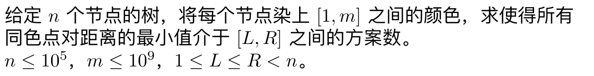
很有意思的一道题。
先差分一下，求出最小值小于等于$R$的答案减去最小值小于$L$的答案。问题转化为统计存在同色点对的距离小于$r$的染色方案的数量。再转化一下可以变成，任意距离不超过$r$的点都是不同色的。
考虑这棵树的BFS序（注意不是DFS），现在我们加入一个点$u$。BFS有一个很优秀的性质：如果$u$到$x$的距离不超过$r$，$u$到$y$的距离也不超过$r$，那么$x,y$的距离同样不超过$r$。这里$x,y$都是当前已遍历到的点。
这意味着当前考虑的所有与$u$距离不超过$r$的点，它们的颜色一定两两不同。如果这样的点有$k$个，那么$u$的染色方案就有$m-k$种。这个数量可以通过点分治简单统计。
HDU 6368 Variance-MST
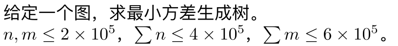
我们要求的东西可以写成：找到一棵生成树$T$，同时找到一个实数$A$，使得
尽量小。
注意这里是任意一个实数$A$而不是所有边权的平均数，因为当$A$取到平均数时在固定$T$的条件下一定最优，$A$随便取得到的答案一定不会优于取平均数得到的答案。
如果$A$确定了，我们就能求出每条边真正的边权，求一遍普通的最小生成树就可以得到答案。
可以发现最小生成树上会有哪些边只与边按照权值从小到大排序之后的顺序有关，而与$A$无关。考虑两条边$a,b$，它们的权值分别为$w_a,w_b$。如果$A<\frac{w_a+w_b}{2}$，那么$a$会排在$b$的前面，否则$b$会排在$a$的前面。
这样的$(a,b)$对共有$m^2$对，它们的平均数也构成了$m^2$个关键点。如果我们将所有的关键点从小到大排序，那么对于相邻的两个关键点之间的$A$，最小生成树上的边是不会变的，由于知道边的大小顺序，因此我们也知道最小生成树上有哪些边，此时我们只需要令$A$等于这些边的平均数就好了。
我们现在得到了一个$m^2\log n$的做法，使用$lct$维护当前的生成树，每次我们会交换排序后相邻的两条边$a,b$的位置。如果$a,b$都在或都不在最小生成树上，那么答案不会收到影响，否则如果加上$b$后生成树形成的环中包含$a$，我们就$cut$掉$a$，$link$上$b$。维护生成树上所有边边权的一次方和二次方和即可。
可以发现上面的做法有大量的情况都是$a,b$同时在或者同时不在最小生成树上，考虑优化。
一开始我们直接求出所有边的最小生成树，接着我们从小到大考虑不在生成树上的一条边$a$。找到$a$形成的环中，权值最小的边$b$，那么在$\frac{w_a+w_b}{2}$之后$a$就会替换$b$。同时$b$也是$a$能替换的边中权值最小的一条，接着我们断开$b$，连上$a$。因为这是当前会发生的所有替换中替换时刻最小的。
现在事件总数由$m^2$变为了$m$，再沿用之前的方法即可。
双一道例题
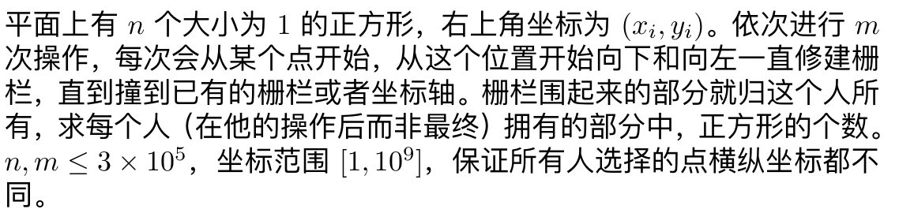
首先我们通过扫描线和线段树求出每个人最终（而非操作之后）拥有的部分中有多少个正方形。
具体来说，我们需要求出每个人往下走到哪里会被挡住。将所有人按照$x$从大到小排序之后扫描线
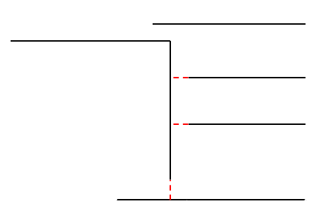
维护有哪些边界伸到了当前的$x$坐标，考虑加入一个人$(x,y)$，我们挨个考虑他可能会撞到的那些边界。如果这个人的加入时刻小于那个边界的加入时刻，那么这个人就会将此边界顶掉，我们就删除掉这个边界，因为它不可能再往左延伸了，直到最后这个人遇到了一个出现时刻小于这个人的加入时刻的边界。
接着我们从左往右扫描线，用线段树维护当前每个$y$坐标还剩多少个正方形，只需要支持区间清零、区间求和即可。
如何从最终的答案推到操作之后的答案呢，考虑如下情况：
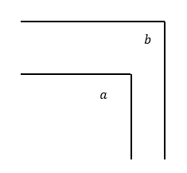
此时$a$在$b$的内部，$b$最终的答案不会包含$a$。但是如果$a$比$b$后出现，那么$b$操作时的答案就应当累加上$a$的答案。扫描线的同时记录下最终框住每个人的是谁（最内一层），记为$next_i$。
将所有人按照时刻从大到小排序，我们维护一个并查集，一开始每个人的$fa$是自己。每次我们查询$next_i$的祖先，将此祖先的答案加上$i$这个人的答案，接着将$i$与$next_i$合并为一个集合。这样并查集查出来的结果就是在$i$操作时最内一层框住$i$的人。注意$next_i$为$0$时我们将父亲设为$0$即可。可以理解为在求子树和。
叒一道例题
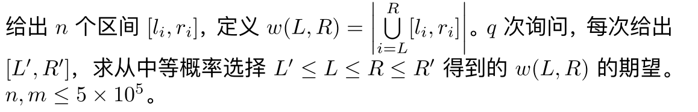
将每个小区间看作一条二维平面上平行于$y$轴的一条线段，$x$坐标为下标$i$，$y$坐标分别为$l_i$和$r_i$。
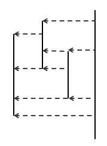
我们从左往右考虑每条线段，对于某条线段来说，我们只考虑当前那些“露出来”的每一条小线段，将当前的线段划分为若干条小线段，接着用当前线段覆盖掉这些小线段。
对于划分出的每一条小线段，对于所有包含$i$的区间来说，小线段中每个点在这个区间中的出现情况都是相同的。故我们可以分别考虑每一条小线段的贡献。
如果对于一条小线段，它是区间$j$在区间$i$上某个部分的投影，即来自$j$的一条小线段，那么我们将所有左端点在$(j,i]$，右端点在$[i,n]$的区间全部加上这条小线段的长度。
问题转化为矩形加、矩形查，可以通过CDQ分治解决。
UOJ 418 【集训队作业 2018】三角形
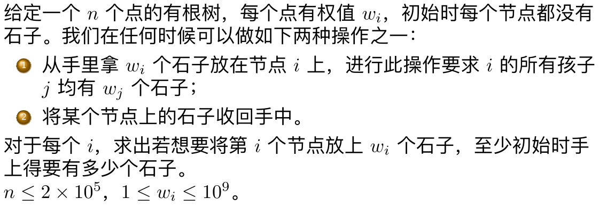
问题等价于：一开始$i$号节点有$w_i$个石子，每次你可以选择一个有石子的点，将它的儿子全部放上石子，再移除这个节点的石子，直到树上没有剩下的石子。整个过程中树上石子个数和的最大值的最小值就是答案。
可以看作每个点有两个值$a_i,b_i$，一个点被选的前提是它的父亲被选了，你有一个一开始为$0$的变量，每次你会给这个变量先减去$b_i$，再加上$a_i$，要求整个过程中变量的最大值尽可能小。
如果我们只需要求出$1$号点为根时的答案，这就是一个经典问题，类似于集训队作业01 on tree。
具体来说，我们优先选择$a_i<b_i$的点，将这些点按照$b_i$从小到大选。接着选择$a_i\geq b_i$的点，按照$a_i-b_i$从小到大选。
如果根不固定的话可以线段树合并。我们求出以最浅点为根时整棵树的答案，接着对于任意一棵子树，只考虑这棵子树时的答案一定是整棵树的答案的子序列，我们只需要记录最终每个点是第几个被选的，就可以直接线段树维护答案。
CREC 2017 I Intrinsic Interval
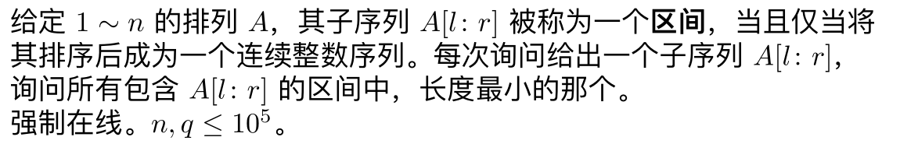
建出析合树，看一下$l,r$的$lca$是啥，如果是合点就是$l,r$所在的那两个儿子构成的连续段，否则就是$lca$所代表的连续段。
UOJ 451 【集训队作业 2018】世界是个动物园
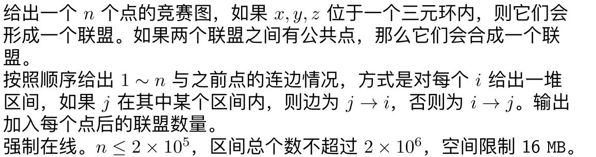
竞赛图的一个很好的性质是，按照强连通分量缩点之后得到的是一条链，链上的每个点往它之后的所有点均有连边。另外，最终的联盟就是强连通分量。
因此，我们只需要知道当前点连出的所有边中最靠前的一条，以及连向当前点的所有边中最靠后的一条。这两条边中间夹的所有点都会被缩为一个强连通分量，接着将当前点插入连出的所有边中最靠前的一条之前。
我们给每个点分配一个实数的坐标，插入时当前点的坐标等于它坐标和右边两个坐标的平均值。如果误差小于$10^{-9}$则重构一段区间，线段树上按照编号维护每个点的坐标即可，只需要支持单点修改，区间查询最大值。